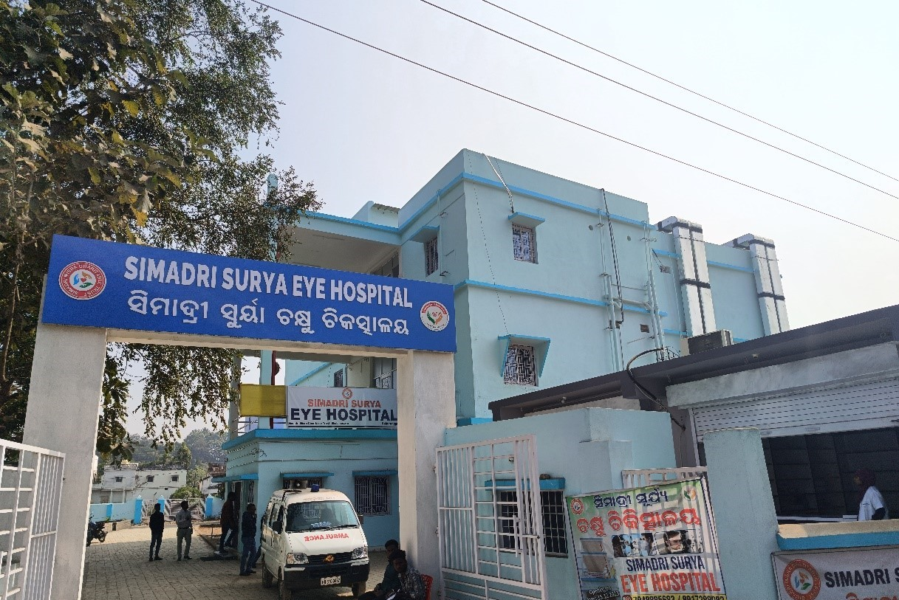
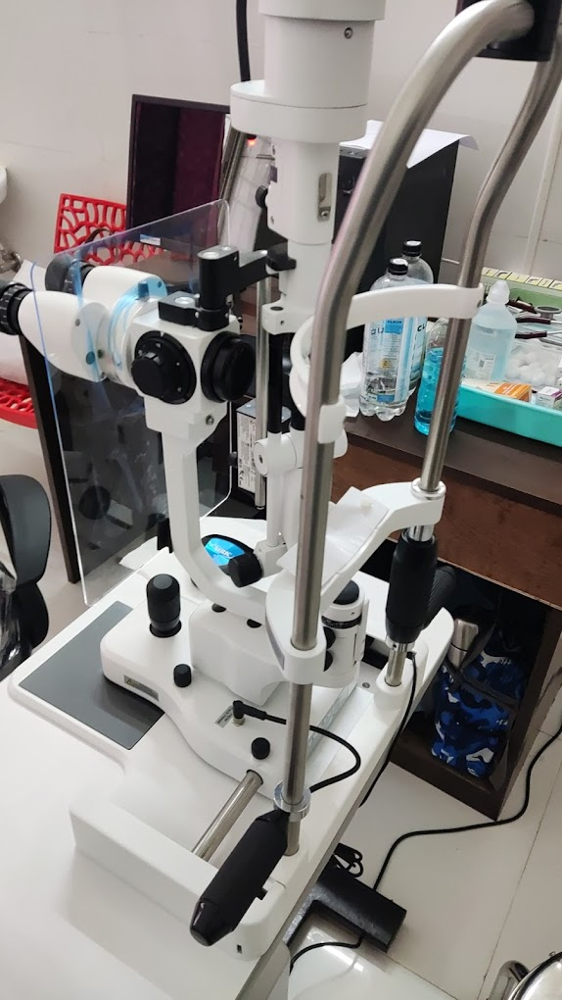
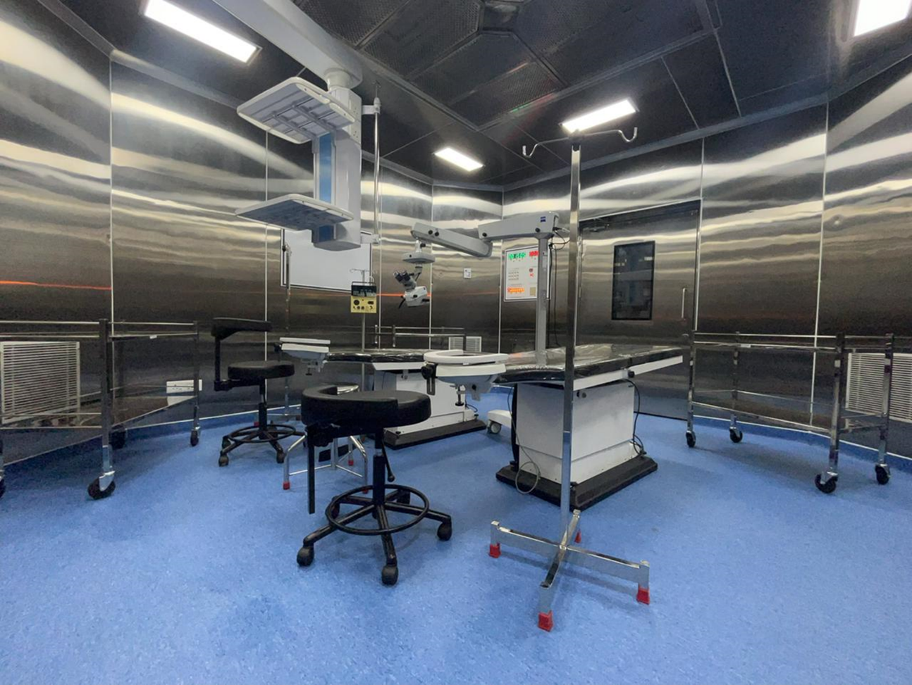
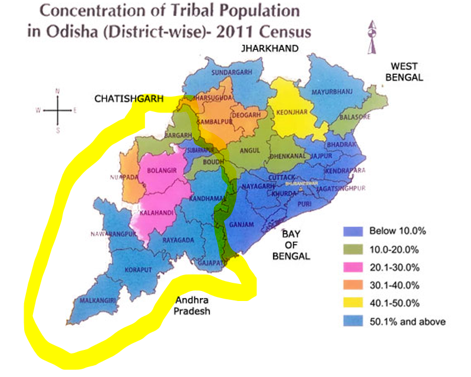

Simadri Surya Eye Hospital has been a beacon of excellence in eye care since its inception. Our mission is focusing on providing accessible and quality charitable eye care services to the 13 primitive tribal communities and individuals in the Below Poverty Line (BPL) category. Additionally, we aim to offer affordable eye care to the general public in and around the areas of Nabarangpur, Koraput, Bhawanipatnam, Jagdalpur, and adjacent 11 districts of Odisha and Chhattisgarh. Founded and operated by the Susheela Public Charitable Trust and Simadri Misra Charitable Trust, our hospital embodies the vision of its benefactors to offer accessible, quality eye care to all segments of society.
The eye care facilities in Nabrangpur District are very minimal and restricted only for the primary level. The people living in and around this area has to travel to Bhubaneswar which is 250 kms far from this place for any emergency eye care and surgical intervention including specialty eye care treatment. As there are no surgical eye care facilities existing in this area and nearby districts the prevalence of Cataract induced avoidable blindness is still going high and there is no intervention for the past many years. Similarly, the emerging eye diseases like Glaucoma and Diabetic retinopathy are compounding the severity of the problem, which is neglected by the people in the villages due to lack of awareness and lack of accessibility of eye care services. Further, the childhood blindness in this area is also a burden due to lack of awareness and accessibility of services. Due to non-existence of any surgical centre in this area which is contributing to the need of reducing avoidable blindness and to provide affordable eye care services, the essentiality of the Secondary Level Centre which can provide quality and timely surgical care to the patients is of prime importance. To realize the dream of eliminating avoidable blindness, a full-fledged examination facility with NABH standards enabled operation theatre, trained manpower with availability of full-time ophthalmic Surgeon is essential.
To address this, Simadri Misra Charitable Trust ( A Trust having long presence in Tribal areas of Odisha) and Susheela Public Charitable Trust ( people having successful management experience in operating eye hospitals in Rural and tribal areas) have joined forces to establish SIMADRI SURYA EYE HOSPITAL in Nabarangpur. This charitable eye hospital aims to treat poor and BPL category tribals free of cost (minimum 70% of total patients) and offers subsidized rates to those who can afford to pay for themselves.
Situated in the heart of Nabarangpur town in an area measuring 66000 sq ft with a four storeyed building having 16000 sq ft area, one single story building of 3000 sq ft, and 1500 sf ft building for canteen, optical shop and chemist shop. In addition a 16 rooms guest house and accommodation for doctors,staff etc with 4500 sq ft area has also been constructed. The Hospital has 2 nos latest state of the art Operation Theatres, 76 no patients beds, in addition to sufficient no of doctors chambers, nursing area, medicine outlet and other associated facilities. .
  In India, particularly in Odisha's tribal regions, blindness and visual impairment, primarily caused by cataracts, pose significant public health challenges. Despite government efforts, including the Tribal Sub Plan, access to eye care remains limited, especially in remote areas where Particularly Vulnerable Tribal Groups (PVTGs) reside. Among these, 13 PVTGs are recognized in Odisha, with six located near Nabarangpur, an area characterized by a high tribal population and a notable prevalence of cataract cases. The lack of medical facilities, coupled with the need for advanced, sterile environments for eye surgeries, exacerbates the issue.
Simadri Surya Eye Hospital emerges as a critical facility in this context, offering state-of-the-art operation theatres and attracting skilled medical professionals by offering competitive wages, thereby addressing some of the acute healthcare needs of these marginalized communities.
Despite these challenges, the establishment of this hospital in Nabrangpur stands as a testament to our commitment to bridging healthcare disparities.  The area covered in yellow line is our catchment area, where almost more than 50% are tribals. In rural Odisha, highest percentage of hospitalisation case was found in the age group 15-44 in Nuapada district with (78.5%) followed by Kalahandi (54.2%), Sambalpur (52.8%) and Sundargarh (52.8%).For 60+ age group highest percentage of hospitalisation case was found in Khurda (54%),followed by Jharsuguda (47.8%) and Mayurbhanja (39.2%). Healthcare Scenario in Odisha: The national average ratio of doctor-to-population was estimated at 1:834, while in Odisha it stood at 1: 2437. South Odisha is much worse.
The "Susheela Public Charitable Trust", renowned for its successful management of eye hospitals in rural and tribal areas, epitomizes a dedicated effort towards improving eye health care in underserved communities. With a focus on providing comprehensive eye care services, the Trust leverages its expertise in hospital management to ensure that individuals in remote locations have access to quality eye treatments and surgeries. This initiative not only addresses the critical need for specialized health services in these regions but also contributes significantly to reducing the prevalence of preventable blindness among the most vulnerable populations, embodying a commitment to enhancing the quality of life through improved vision care.
The "Simadri Misra Charitable Trust," established in 2002 in memory of the freedom fighter and advocate Sri Simadri Misra, continues his legacy of supporting tribal communities in Odisha. Misra, who dedicated his life to the rights of tribals in Nabarangpur and edited the "Dandakaranya Times" to highlight their issues, is commemorated through the trust's efforts. Founded by his son, Sh. J P Misra, and currently managed by family members, the trust offers free education, boarding, and other essentials to 150 tribal students from BPL families across Odisha in a hostel in Bhubaneswar. The trust, recognized for its contributions with Section 80G and CSR registrations, exemplifies sustained commitment to tribal upliftment.